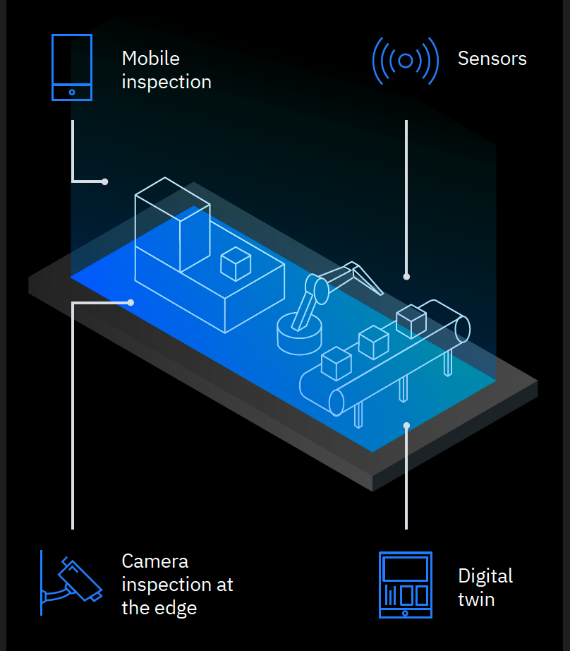

Welcome to the IBM Maximo Visual Inspection Lab
(Version: 1.3.0)


Introduction:
IBM’s Maximo Visual Inspection is a video/image analysis platform that offers built-in deep learning models that analyze images and video streams for classification and object detection. Maximo Visual Inspection uses a point and click environment which makes it easy for data scientist and non-data scientist to build custom visual artificial intelligence models.
Maximo Visual Inspection is coupled with Maximo Visual Inspection Mobile, a standalone iOS application that is designed to execute models built on the Maximo Visual Inspection platform. The suite provides users with a comprehensive visual inspection solution.
This lab is designed to give you an opportunity to discover the ease of use of Maximo Visual Inspection and Maximo Visual Inspection Mobile. These solutions enable enterprises to harness AI in their journey to address critical improvements, including asset inspection consistency, cost reduction and unleashing automation at scale.
During this lab you will learn how to prepare a dataset, train a model, deploy a model and complete an inspection using Maximo Visual Inspection Mobile.
Pre-Requisites
In order to successfully complete this lab, you will need an iOS device (iPhone, iPad or iPod with iOS 13 or later) and two aluminum cans.
Use Cases
The primary use cases for Maximo Visual Inspection is focused on asset and equipment reliability.
This includes assets that require frequent inspections, are hard-to-access or in dangerous locations and where up-time safety and performance are critical to business operations, resiliency and cost management.
Target Industries:- Manufacturing
- Energy and Utilities
- Oil and Gas
- Transportation
- Civil Infrastructure
- Buildings
Lab Use Case
This lab will take you through a manufacturing use case. This lab will walk you through the implementation of Maximo Visual Inspection at a fictious aluminum can manufacturing company. The company is struggling to keep up with order fulfillment and is losing a lot of money due to material waste due to rework and defective cans not being spotted. The personas who will be in charge of the implementations will be the quality engineer and production line worker.
Updated: 2021-01-11